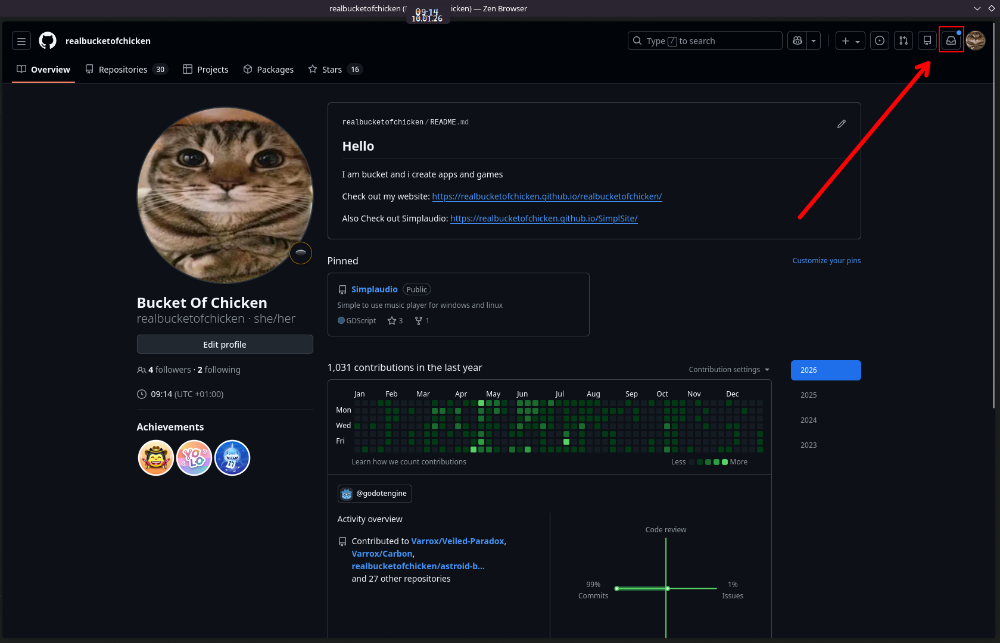
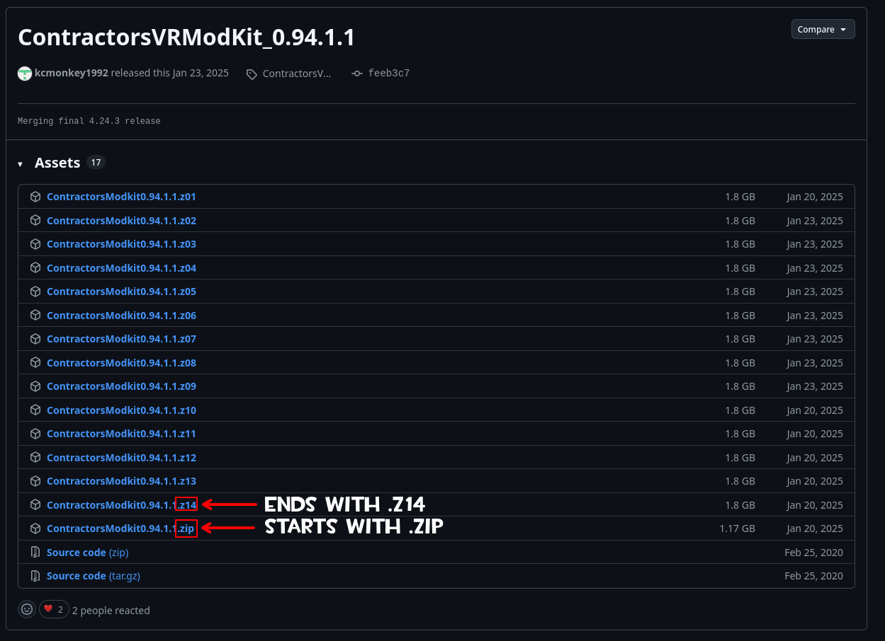
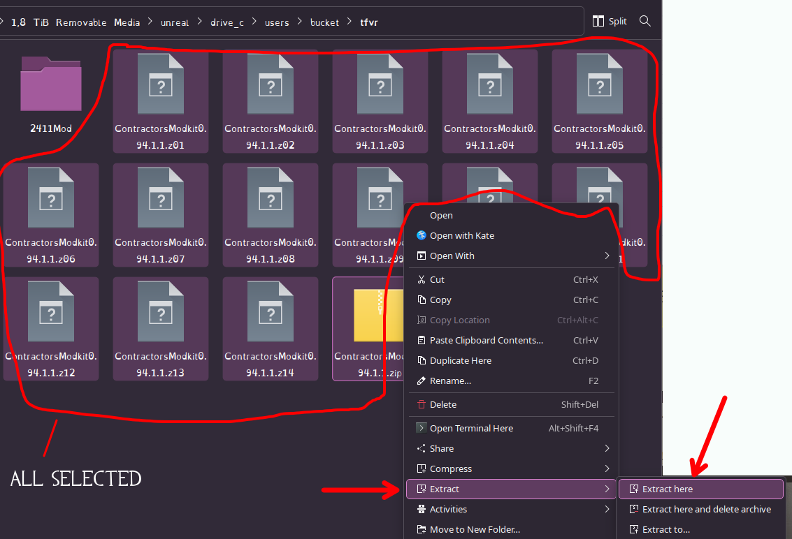
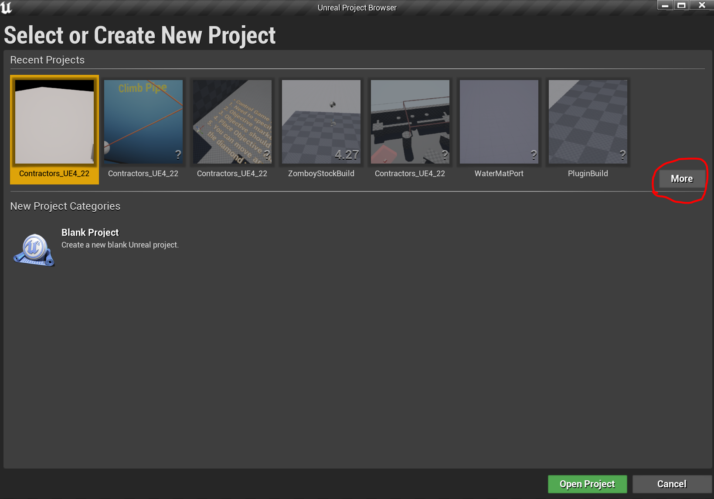

adapted from: the offical guide
you will need a github and epic games account, you can make them here:
Github: github.com
Epic games: epicgames.com/id/login
You will now recieve an invitation on github, check your notifications
now you can download the modkit!
download it here
You will see alot of files, you can ignore the source code zip
it is important to note that the files start with .zip and end with .z13(or z14 for the old modkit version)
you will need a unzipper that supports unzipping multiple zip files as one, if the unzipper you currently use dosent support it i would recommend using 7-zip
to unzip with 7-zip, select all files and right click
(this might look a little different than what you have, the principle is the same)
This might take a very long time! unreal engine is slow
before we can open the mod project, we actually need to launch the engine atleast once, to do so navigate to [where you installed the modkit]\ModEngine\Engine\Binaries\Win64 and launch UE4Editor.exe
If it's the first time you use the modkit, click on "More"->"Browse"
Then select the Mod Project file(Contractors_UE4_22.uproject) that is located at [where you installed the modkit]\ModProject\
You're finally done, you can start making mods now!